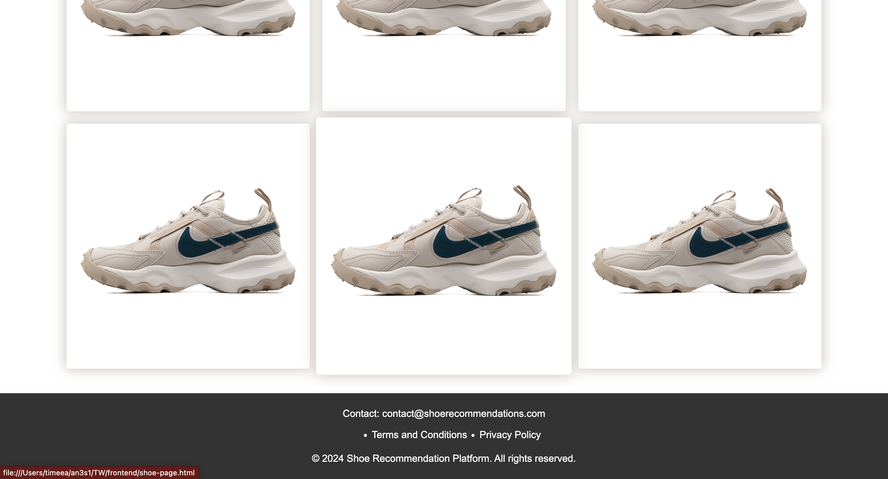
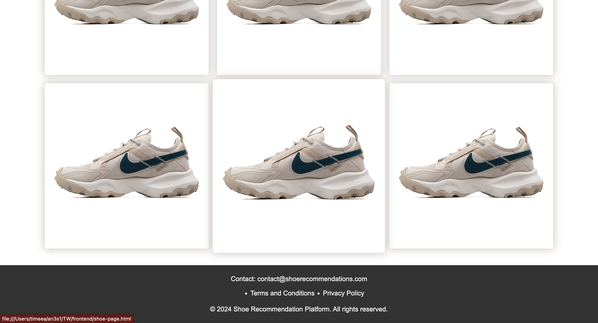
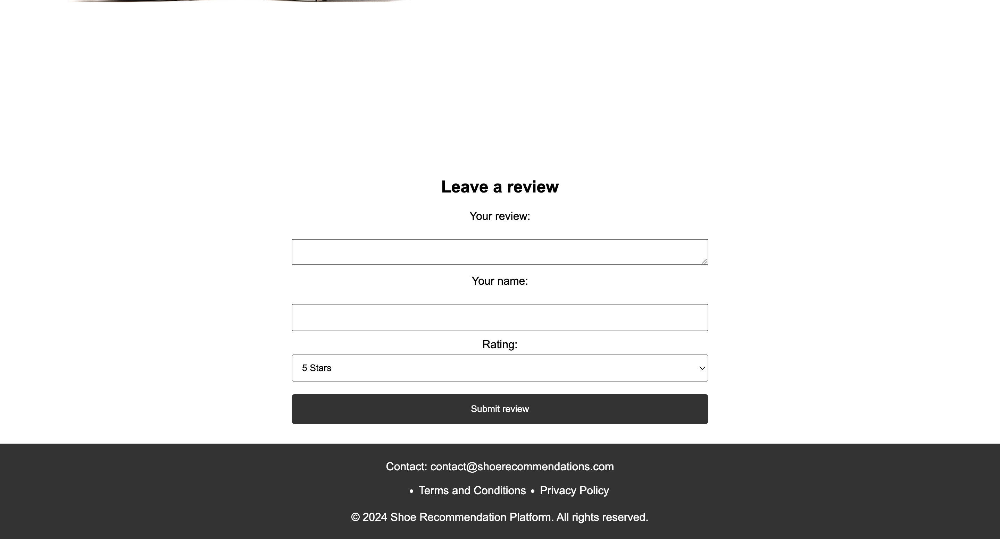
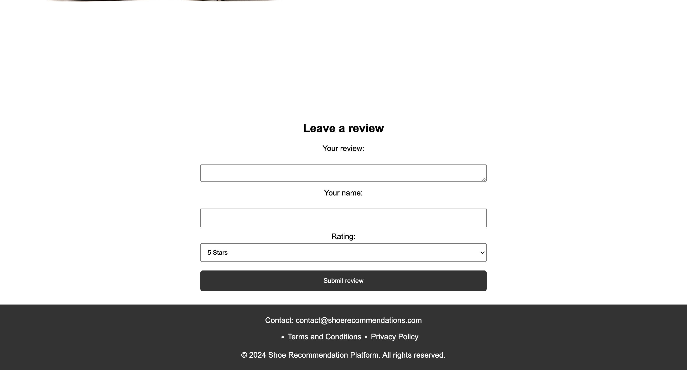
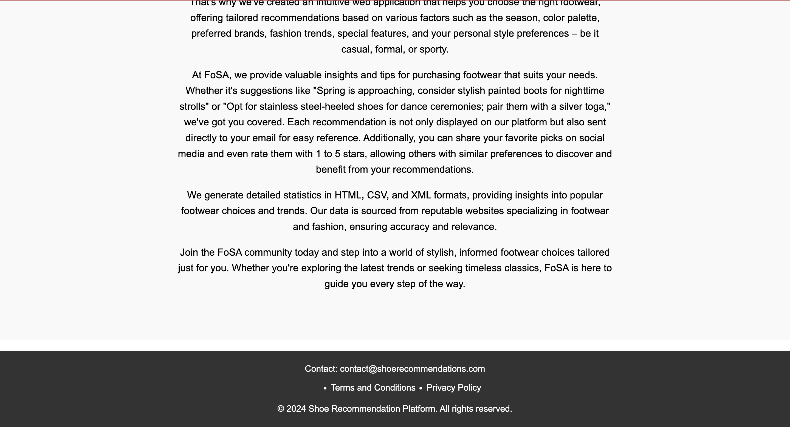
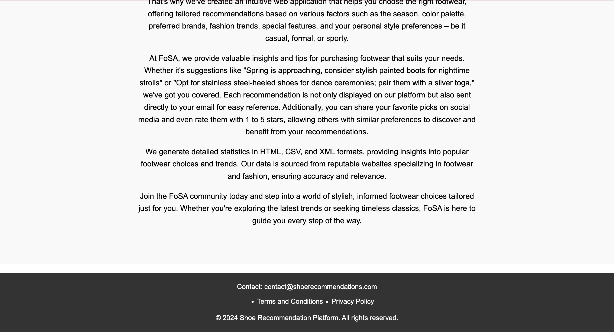

Footwear Smart Assistant
Authors
- Sarghe Andrei Vlad
- Vartolas Timeea-Stefana
1. Introduction
1.1 Purpose
The purpose of this document is to present a description of the web application Footwear Smart Assistant based on the project FoSA.
It will explain the purpose and features of the application, the interface of the software, what it will do and the constraints under which it must operate.
This document is intended for any potential users of the software.
1.2 Intended Audience and Reading Suggestions
This document is intended for any user that might wish to use the Footwear Smart Assistant web application.
1.3 Product Scope
Footwear Smart Assistant has been developed with the intended purpose of being an interactive webpage for the general internet users.
2. Overall Description
2.1 Product Description
The Footwear Smart Assistant website is based on the FoSA project.
It is an online website meant for people who wish to look for specific or non-specific footwear in an interactive way.
Users can choose to see our recommended footwear or choose their own shoes based on a list of filters provided by the website.
2.2 Product Functions
The pages within the website are designed as follows:
Home Page (index) - central point of navigation to the rest of the pages within the website
- logo: our logo, redirects to the homepage
- title: redirects to the homepage
- login button: redirects to the login page
- sidemenu: pulls out a menu containing the home, products, about and contact pages.
- home: redirects to the home page
- products & outfits: redirects to the filters page
- about: redirects to the about page
- contact: redirects to the contact page
- subscribe email input: adds you to our list of subscribers for our newsletter if your email is valid
Login Page
- logo: our logo, redirects to the homepage
- title: redirects to the homepage
- sidemenu: pulls out a menu containing the home, products, about and contact pages.
- email input: accepts the email of the user
- password input: accepts the password of the user
- login: finalizes the login action, logging the user in if the credentials are correct, and then redirects them to the home page
- register: redirects to the register page
Register Page
- logo: our logo, redirects to the homepage
- title: redirects to the homepage
- sidemenu: pulls out a menu containing the home, products, about and contact pages.
- username input: accepts the username of the user
- email input: accepts the email of the user
- password input: accepts the password of the user
- confirm password input: checks that the two passwords match.
- create aaccount button: finalizes the register action, registering the user in if the credentials are correct, and then redirects them to the home page
- Sign in button: redirects to the login page
Filter Page - allows users to get the best footwear recommendations based on specific criteria or needs
- logo: our logo, redirects to the homepage
- title: redirects to the homepage
- sidemenu: pulls out a menu containing the home, products, about and contact pages.
- home: redirects to the home page
- products & outfits: redirects to the filters page
- about: redirects to the about page
- contact: redirects to the contact page
- logout button: redirects to the homepage
- season filter: opens a dropdown menu with multiple season options, allowing users to select one or more seasons for filtering footwear options
- weather filter: opens a dropdown menu with multiple weather options, allowing users to select one or more weather conditions for filtering footwear options
- gender filter: opens a dropdown menu with multiple gender options, allowing users to select one or more genders for filtering footwear options
- age filter: opens a dropdown menu with multiple age group options, allowing users to select one or more age groups for filtering footwear options
- color filter: opens a dropdown menu with multiple color options, allowing users to select one or more colors for filtering footwear options
- pattern filter: opens a dropdown menu with multiple pattern options, allowing users to select one or more patterns for filtering footwear options
- shoe images: redirect to the specified shoe page
Shoe Page - provides detailed information about a specific shoe, including its photo, description, and any special features
- logo: our logo, redirects to the homepage
- title: redirects to the homepage
- sidemenu: pulls out a menu containing the home, products, about and contact pages.
- home: redirects to the home page
- products & outfits: redirects to the filters page
- about: redirects to the about page
- contact: redirects to the contact page
- logout button: redirects to the homepage
- review input: accepts the review of the user
- name input: accepts the name of the user
- rating dropdown: selects the rating of the user
- submit review: finalizes the review action, allowing users to submit their feedback and comments about the footwear product
About Page - provides information about a the shoe recommendation platform, including its mission and vision
Contact Page - provides the contact information of the platform (email, phone number and address)
2.3 Operating Environment
The developed product can be used on any device with a connection to the Internet and a browser installed.
2.4 Design and Implementation Constraints
The development of the Footwear Smart Assistant (FoSA) website is subject to the following constraints:
- Corporate/Regulatory Policies: Compliance with GDPR for data protection.
- Hardware Limitations: Ensuring responsive performance across various devices with differing hardware capabilities, including timing and memory requirements.
- Specific Technologies and Tools: Use of Node.js for server-side development, MySQL2 for database management, and HTML, CSS (Sass) for front-end development.
- Parallel Operations: Supporting concurrent user interactions without performance degradation.
- Language Requirements: English as the primary language with potential support for multiple languages for international users.
- Communications Protocols: Use of HTTPS for secure data transmission.
- Security Considerations: Implementation of robust authentication mechanisms using public and private keys, and encryption for data protection.
- Design Conventions: Adherence to industry-standard coding practices and design conventions to ensure maintainability and scalability of the codebase.
3. External Interface Requirements
3.1 User Interfaces


 

 

 


3.2 Software Interfaces
The minimum software requirements of Footwear Smart Assistant are a working browser and a connection to the Internet.
3.4 Communications Interfaces
Footwear Smart Assistant requires an Internet connection. The communication standard to be used is HTTP.
4. System Features
4.1 Home Page
Users can login into their acoount, navigate to all other pages and subscribe to our newsletter.
4.2 Login Page
Users of our website can login by entering their credentials or register if they do not have an account and navigate to other pages from this page.
4.3 Register Page
Guests can create an account and then use it to log into the application and access all the features it provides and navigate to other pages from this page.
4.4 Filter Page
Users can get the best footwear recommendations based on specific criteria. They can select the filters that match their needs and navigate to other pages from this page.
4.5 Shoe Page
Users can get detailed information about a specific shoe, including its photo, description, and any special features. They can review the recommendation and also navigate to other pages from this page.
4.6 About Page
Users can get information about a the shoe recommendation platform, including its mission and vision and navigate to other pages from this page.
4.7 Contact Page
Users can get the contact information of the platform (email, phone number and address) and navigate to other pages from this page.
5. Use of Technologies: Motivation
The use of Node.js for server-side development in the FoSA project is motivated by its non-blocking, event-driven architecture, which provides high performance and scalability for handling numerous simultaneous connections. MySQL2 is chosen for database management due to its reliability, robustness, and seamless integration with Node.js, ensuring efficient data handling and storage. For front-end development, HTML and CSS (with Sass) are utilized to create a dynamic and responsive user interface, leveraging Sass's advanced features for more maintainable and organized styling. Together, these technologies offer a powerful, efficient, and scalable solution for the Footwear Smart Assistant website.